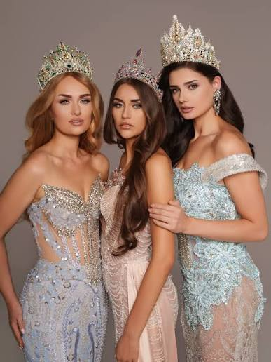

De miss verkiezingen van Nederland
Hoewel eigenlijk alle verkiezingen hetzelfde functioneren, waarbij je begint met een auditie en daarna een traject van 4-6 maanden ingaat, doen alle verkiezingen het net even anders. In deze maanden ga je verschillende dingen doen, zoals fotoshoots, een stemcampagne doen en verschillende goede-doelenacties. Ook krijg je cursussen in catwalk, social media en manieren.
Achter de schermen kunnen verkiezingen echter heel verschillend werken. Zo worden verkiezingen zoals Miss Nederland en Miss Beauty door een groot team gerund, waarbij veel mensen samenwerken. Soms worden deze mensen hier ook voor betaald. Dit zijn verkiezingen die vaak al bekend zijn en die ook grote internationale podia belopen. Maar je hebt ook kleinere verkiezingen. Die doen mij altijd meer denken aan mensen die zzp-werk doen.
Een goed voorbeeld hiervan is de verkiezing Miss Aura, die gerund wordt door één vrouw. Hierbij helpen finalisten en oud-winnaressen ook vaak mee. Dit zijn vaak echte passieprojecten. Dit zie je ook vaak bij wat kleinere internationale podia. Je kan een titel ‘kopen’.
Dit houdt in dat je een licentie koopt. Dit betekent dat jij de kroon aan iemand mag geven en dat jij verantwoordelijk bent om iemand naar het internationale podium te sturen. Zo komen bedrijven aan hun verkiezingen en zo komen verkiezingen te ontstaan. Dit betekent niet dat je zomaar een titel kan kopen en er vervolgens heen kan gaan. Hoewel dit natuurlijk wel gebeurt, is dit zeker niet de bedoeling. Je wordt al snel door de publieke mening uit de verkiezing gezet. Sommige verkiezingen hebben hier ook diskwalificatieregels voor.
Images van onze Internationale queens
-

-
.jpeg)